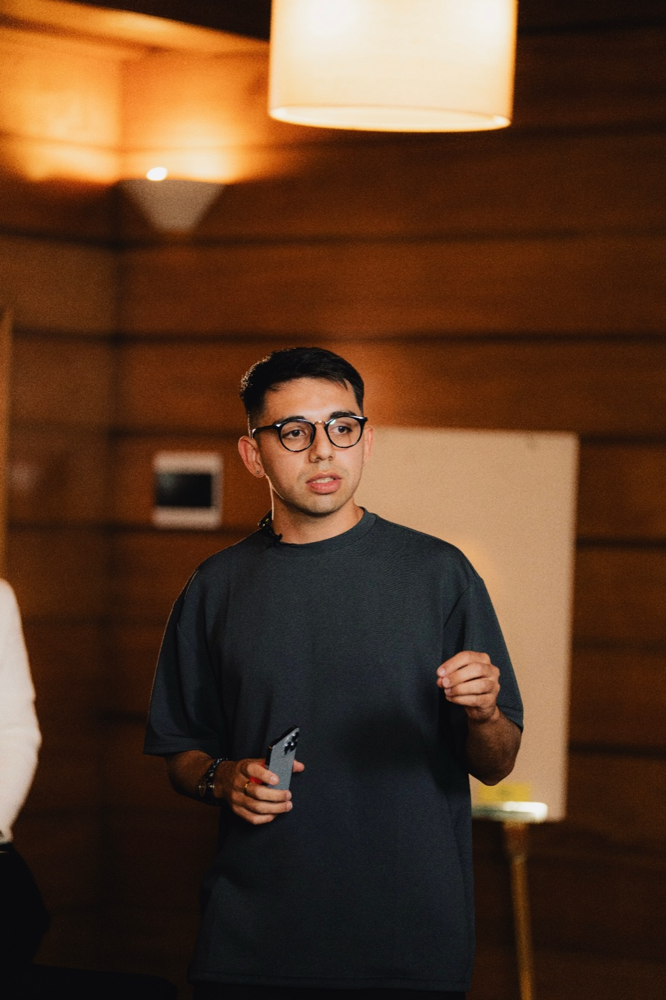

Ya hiciste lo más difícil: arrancar solo y no aflojar. Llegaste hasta acá con trabajo y ganas, y ese combo tiene techo — los clientes entran por recomendación, el precio lo decidís por intuición, la entrega la resolvés sobre la marcha y el mes que viene vuelve a empezar de cero. Lo que falta no es talento: es el negocio alrededor. Una oferta clara con un precio que se sostiene, un proceso de venta que se repite, y una forma de entregar que no te consuma. Eso no se aprende haciendo más trabajo. Se construye.
Onboarding y formulario. La primera sesión uno a uno define tu cuello de botella y el orden en que se ataca. Durante el mes se suman creatividad, contenido y operaciones, cada uno con su entregable, más la sesión de oferta y precio. El mes cierra eligiendo tu orientación.
El acompañamiento uno a uno pasa a ser semanal y va directo sobre tu caso. Las grupales de creatividad, contenido y operaciones siguen corriendo todas las semanas: nunca se cortan. Tu orientación define la agenda de cada sesión y el checklist.
Última sesión sobre los 90 días completos: qué se resolvió, qué quedó instalado y qué sigue. Salís con un roadmap escrito a 6 meses.
Al cierre del primer mes elegimos juntos por dónde se profundiza. El programa es el mismo para todos; lo que cambia es dónde se pone el peso.
Cuando no te llegan consultas, o te llegan y no cerrás.
Se profundiza en oferta, precio y proceso de venta.
Cuando conseguís, pero la demanda depende de tu energía.
Se profundiza en contenido, audiencia y delegación de la producción.
Cuando conseguís y cerrás, y la entrega te consume.
Se profundiza en proceso de servicio, capacidad y equipo.
No hay equipo de cuenta ni intermediarios. Nos sentamos los cinco, cada uno metido en tu negocio por el frente que dirige todos los días.

Todo el programa en un solo lugar: tu recorrido, el material, tu checklist y el registro de cada sesión. Abrís y ves en qué semana estás y qué te toca.
Publicás tus búsquedas para armar tu propio equipo: editores, diseñadores, setters, asistentes. Es lo que destraba el momento de delegar, que es donde casi todos se frenan por no saber dónde buscar.
Un asistente cargado con el material de Cáscara: clases, casos, ejemplos y el criterio de los cinco founders. Está disponible siempre y responde con ejemplos concretos. Sirve para destrabar entre una sesión y la siguiente.
El resto de la camada trabajando en paralelo, más los que ya pasaron por el programa.
Una vida son, en promedio, unos 32.857 días.
¿Cuándo querés empezar a crecer?